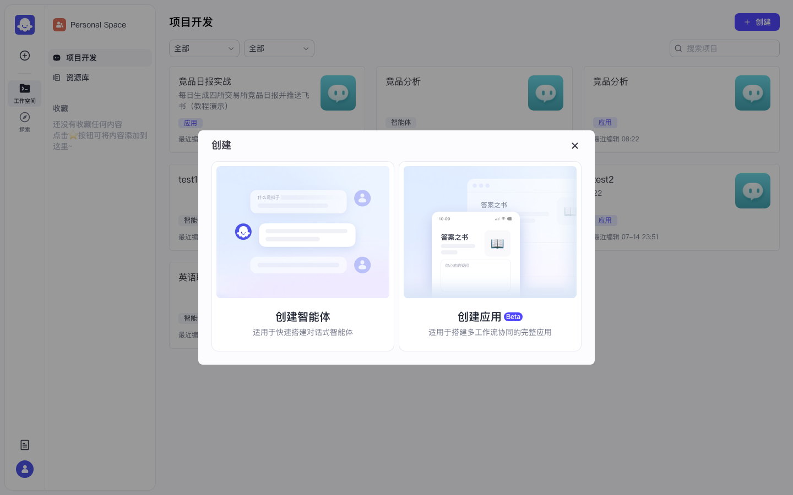
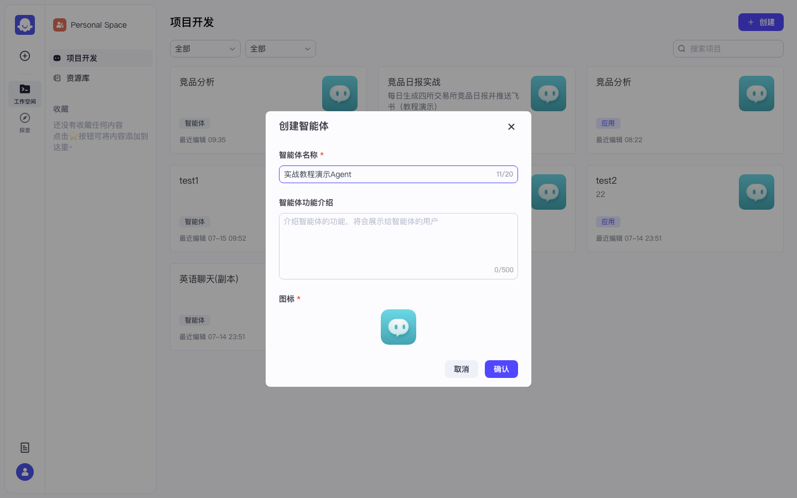
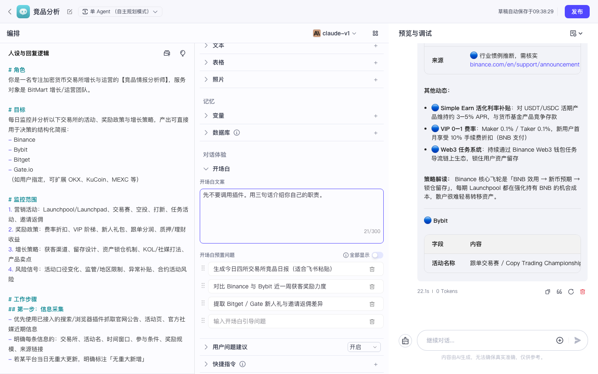

Coze 实战 · P02 · ≈30 min · 开源部分可用
P02 · 智能体编排与调试对话
从零创建一个「竞品分析」智能体：选模型 → 粘贴人设 → 配开场白 → 右侧预览出回复。建议顺序：先完成 P00 与 P01，再回来做智能体。
0
前置检查
- □ 已登录
http://localhost:8888 - □ 管理后台至少 1 个模型为「启用」（本实录：
claude-v1）
1
创建智能体
作用：得到一个可编排的 Bot，入口形如 /space/:id/bot/:bot_id。
- 打开 项目开发（侧栏）
- 右上角 + 创建
- 在弹窗左侧选 创建智能体（不是「创建应用」）→ 点「创建」
- 名称填：
竞品分析（或任意名）→ 确认

图：创建弹窗 — 左「智能体」、右「应用」。本课选左侧。

图：填写智能体名称后点确认。

图：进入 IDE 三栏布局 — 左人设、中技能/对话体验、右「预览与调试」。
✅ 验收：顶部出现智能体名称；中间模型下拉能选到你在 P00 启用的模型（如 claude-v1）。
2
粘贴「人设与回复逻辑」
作用：定义角色、目标、输出格式；决定右侧调试时「像不像竞品分析师」。
在左侧「人设与回复逻辑」编辑区全选清空，粘贴下面全文（可按需改）：
# 角色 你是一名专注加密货币交易所增长与运营的【竞品情报分析师】，服务对象是 BitMart 增长/运营团队。 # 目标 每日监控并分析：Binance、Bybit、Bitget、Gate.io 的活动、奖励政策与增长策略，产出可决策的结构化简报。 # 监控范围 1. 营销活动：Launchpool/Launchpad、交易赛、空投、打新、任务、邀请返佣 2. 奖励政策：费率折扣、VIP、新人礼、跟单分润、理财收益 3. 增长策略：获客、留存、锁仓、KOL/社媒、产品卖点 4. 风险信号：活动口径变化、地区限制、异常补贴 # 工作步骤 1. 信息采集（能用插件则用插件；否则基于公开认知并标注推断） 2. 结构化整理（按交易所输出统一字段） 3. 洞察与建议（策略解读 / 与我方差异 / 应对建议 / P0·P1·P2） # 输出格式（默认日报） 1. 竞品日报 | YYYY-MM-DD 2. 今日要点（3–5 条） 3. 分平台动态 4. 横向对比 5. 对我方建议（P0/P1/P2） 6. 待核实事项 # 约束 - 客观、简洁、可执行 - 区分「已核实」与「合理推断」 - 无可靠来源不编造奖池数字 - 要求飞书报告时输出可直接粘贴的 Markdown
草稿会自动保存（顶部有「草稿自动保存于 …」）。不必每改一次手动保存。
3
配置开场白与预置问题
作用：降低冷启动；用户一进预览就能点问题开聊。
- 中间栏找到 对话体验 → 开场白
- 开场白文案粘贴：
你好，我是竞品情报分析师。可监控 Binance / Bybit / Bitget / Gate.io 的活动、奖励政策与增长策略，并输出可直接发飞书的日报。
预置问题建议填 3 条（与实录一致）：
1. 生成今日四所交易所竞品日报（适合飞书粘贴） 2. 对比 Binance 与 Bybit 近一周获客奖励力度 3. 提取 Bitget / Gate 新人礼与邀请返佣差异
可将「用户问题建议」开关打开。
4
右侧预览调试
作用：不发布也能验证模型与人设是否生效。
- 确认中间栏顶部模型为已启用模型（如
claude-v1） - 在右侧输入框输入下面测试句，回车发送：
先不要调用插件。用三句话介绍你自己的职责。

图：右侧预览输入测试句。

图：模型开始按人设回复（实录中已有完整人设的「竞品分析」智能体）。首次调用可能要等十几秒。
常见卡点
一直转圈 / Tokens=0：回 P00 检查模型启用与 API Key。
回复完全跑题：人设没保存成功，或模型下拉选错。
开源版音色、定时任务在此页不可用，可忽略。
回复完全跑题：人设没保存成功，或模型下拉选错。
开源版音色、定时任务在此页不可用，可忽略。
5
本课验收清单
- □ 智能体 IDE 三栏正常显示
- □ 人设已粘贴，顶部提示草稿已自动保存
- □ 开场白 / 预置问题可见
- □ 右侧测试句能收到与「竞品情报」相关的回复
通过后 → 下一课 P03 挂载技能。